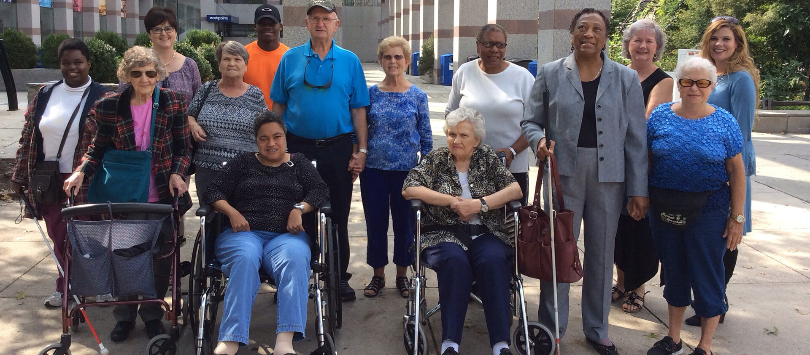

Community Eyewear Center
Emergency replacement glasses, donated eyewear, readers, sunglasses, and Lions Club partnerships.
Visit the Eyewear CenterHealthy Vision. Independent Living. Connected Community.
Whether you are experiencing vision changes, caring for someone you love, looking for affordable eyeglasses, searching for trusted information, or wanting to support your community, welcome to The Blind Center.
You are in the right place.
How can we help today?
Need help today?
If your glasses are broken, lost, or no longer usable, The Blind Center may be able to help locate a temporary pair from donated eyewear inventory. Inventory varies, and an exact prescription match cannot be guaranteed.
Welcome to The Blind Center
The Blind Center is a community center, learning campus, discovery space, and connection point for people who are blind, have low vision, are experiencing changes in vision, or want to protect their eye health.
Every person's journey is different. Some visitors need eyeglasses today. Some are learning how to use a phone after vision loss. Some are caring for a parent. Some want friendship, classes, volunteer opportunities, or a place to belong.
Discover The Blind Center
Emergency replacement glasses, donated eyewear, readers, sunglasses, and Lions Club partnerships.
Visit the Eyewear CenterPlain-language education about vision, eye health, common eye conditions, prevention, and healthy aging.
Explore Vision GuidesHands-on learning for smartphones, screen readers, magnifiers, AI, smart-home tools, and adaptive technology.
Explore TechnologyHealthy cooking, adaptive kitchen skills, diabetes prevention, nutrition education, and shared meals.
Learn in the KitchenA model home concept for tools, lighting, organization, technology, and techniques that support independence.
Tour the ApartmentClasses, workshops, Discovery Guides, learning pathways, and educational programs for confidence.
Visit ENCight AcademyStories of discovery
Name changed for privacy
With support from a local social worker and The Blind Center team, "Lucinda" rebuilt documents, benefits, job training, and housing after a crisis.
Donor impact
A donated CCTV magnification machine helped "Tom" read mail, review bills, and continue managing his own affairs.
Share your story
Stories may be shared only with permission and privacy care. Contact the Center if you want to tell how a resource helped.
ENCight Academy
Through classes, workshops, Discovery Guides, demonstrations, and future online learning, participants build practical skills for daily life.
Upcoming experiences
Join us for technology workshops, healthy cooking classes, support groups, volunteer opportunities, community events, Discovery tours, professional programs, Dining in the Dark, and Friends gatherings as dates are confirmed.

Friends of The Blind Center
Membership is open to everyone. Free membership provides community updates and learning opportunities. Supporting memberships help sustain programs, emergency glasses, and future educational resources.
Become a FriendWays to give
Support urgent needs and daily programs.
Help someone access temporary eyewear.
Ask staff about current recycling options.
Support classes, events, and outreach.
Share your time and experience.
Ask about planned giving options.
Professional Commons
The Professional Commons provides office suites, hot-desk opportunities, meeting rooms, and recurring office time for independent professionals and organizations whose work strengthens the community.
Professionals located on campus operate independently. The Blind Center provides space but does not supervise, manage, employ, affiliate with, or direct their professional services.
The Community Innovation Hub and Community Solutions Lab are planned for 2027.
Explore the Professional CommonsVisit The Blind Center
Visit us to learn about services, donate eyeglasses, attend a class, explore technology, volunteer, or discover resources available through the Community Center.